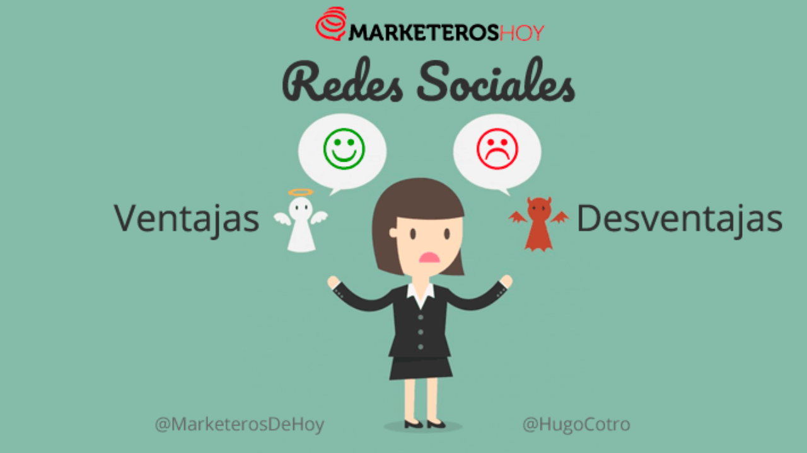

Comunicación: Todas las personas tienen la necesidad de relacionarse con otras. Las redes sociales ofrecen la oportunidad de compartir momentos especiales y ponerse en contacto con amigos, conocidos o desconocidos de cualquier parte del mundo con el que compartamos intereses. Marca personal: Las redes sociales pueden ser nuestra mejor carta de presentación. Una de sus ventajas es que se pueden considerar un currículum 2.0, con el que podemos aprovechar para desarrollar nuestra marca personal. Trabajo: Muchas empresas buscan a los posibles candidatos en redes sociales profesionales como Linkedin. Incluso investigan sus perfiles personales en otras redes como Facebook o Twitter para conocer mejor a sus candidatos. Por eso es tan importante configurar correctamente la privacidad de nuestros perfiles y ser muy cuidadosos con lo que subimos. Entretenimiento: Nos ofrecen información y entretenimiento a tiempo real y a la carta. Podemos elegir a quién seguir o qué medios de comunicación nos interesan para mantenernos informados en lo que pasa en cualquier lugar del mundo. Denuncia de situaciones: Gracias a las redes sociales salen a la luz situaciones que a los medios de comunicación les pasan desapercibidas. Además, facilita la labor de organizar acciones solidarias como pueden ser animales abandonados o personas que necesitan ayuda. Compartir: La opción de compartir conocimientos e información puede ser de gran ayuda para actividades formativas como sucede en grupos universitarios o de especialistas en diferentes disciplinas.
La primera de las desventajas de las redes sociales es la mayor desventaja de las redes sociales.. Sí, estamos hablando del opportunity costo costo de la oportunidad perdida que tiene para un negocio. Me refiero a que al no tener una presencia social, los negocios están pasando la oportunidad de conectarse con una audiencia internacional, o bien, una audiencia local pero altamente segmentada. De cualquier forma, esta desventaja no se detiene en lo que se pierde en términos de exposición e interacción. Sino que también, en términos de pérdida de mercados. Mientras que un negocio decide no tener redes sociales, cien más abren una cuenta, por lo que están tomando ganancias de aquellos que no tienen una presencia social. Algunos negocios tienen el argumento que las redes sociales pueden afectar su reputación. De cualquier forma, esto puede a pasar con o sin las redes sociales. La única diferencia es si vas a dejar que la conversación te incluye o no. Por ejemplo, Hootsuite te ofrece varias herramientas de escucha social; lo que te va a permitir saber lo que las personas están diciendo alrededor de tu marca, de un hashtag, tema, o conversación. Muy bien, este es la continuación al punto número dos, pero es importante resaltarlo como la mayor desventaja de las redes sociales, o por lo menos como el mayor riesgo que conlleva utilizarlas. Todos hemos visto los videos de American Airlines y Pepsi que causaron controversia el año pasado, y es que la viralidad que se generó alrededor de ellos fue suficiente para hacer que casi cada persona en el mundo los viera. Gracias a la capacidad de distribuir contenido viral de las redes sociales, podemos escalar el impacto (positivo o negativo) de nuestros mensajes y acciones. De cualquier forma, cuando tenemos un error compartible (Una mala atención al cliente grabada, un desplante de un empleado, o incluso los comentarios de un ejecutivo), nos enfrentamos a la posibilidad de un ataque viral.